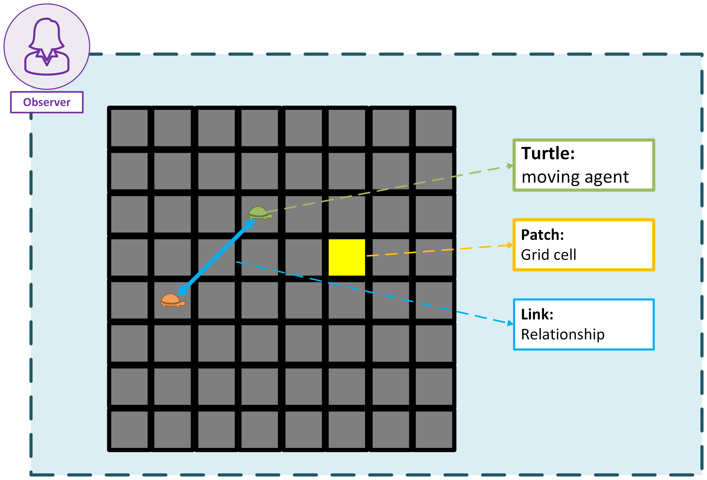

2. Agents#
Agents are the main actors in NetLogo. They can be turtles, patches, links, or the observer. Each agent has its own set of properties and behaviors.
The turtles are the most common type of agent. They can move around the world, interact with other turtles, and change their properties. Turtles can also have different shapes and colors, which can be used to represent different types of agents in your model.
The world is made up of patches, which are the individual squares that make up the 2D grid. Each patch can have its own properties, such as color and elevation. Patches can also be used to represent different types of terrain or resources in your model. The turtles can move around the patches and interact with them, which allows you to create complex models of behavior and interaction.
Links are a type of agents used to connect turtles and represent relationships between them. They can be used to represent social networks, transportation systems, or any other type of connection between agents.
The observer is a special agent that can control the simulation and interact with the other agents. The observer can create and destroy turtles, change the properties of patches, and control the flow of the simulation. The observer can also be used to create user interfaces, such as buttons and sliders, to control the simulation. It is important to note that the observer does not have any properties or behaviors of its own, but it can interact with all other agents in the simulation.

Note
When NetLogo is initiate, there are no turtles in the world. The observer can create turtles using the create-turtles command. Patches can also create turtles using the sprout command.
Patches can’t move, but you can consider them as active agents from the beggining.